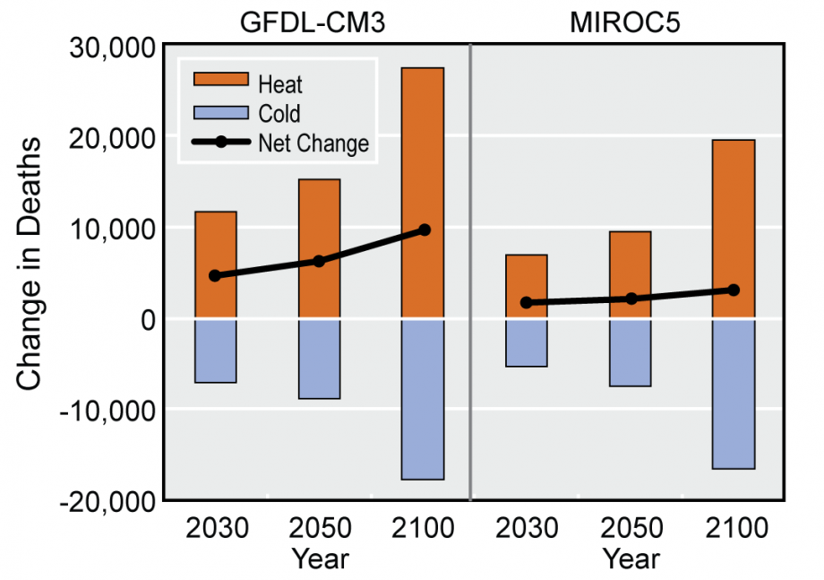
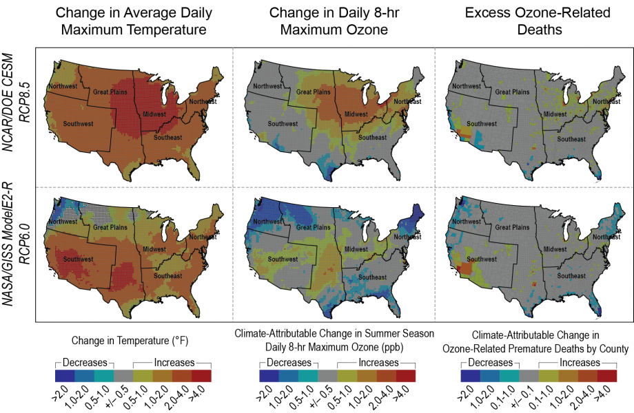
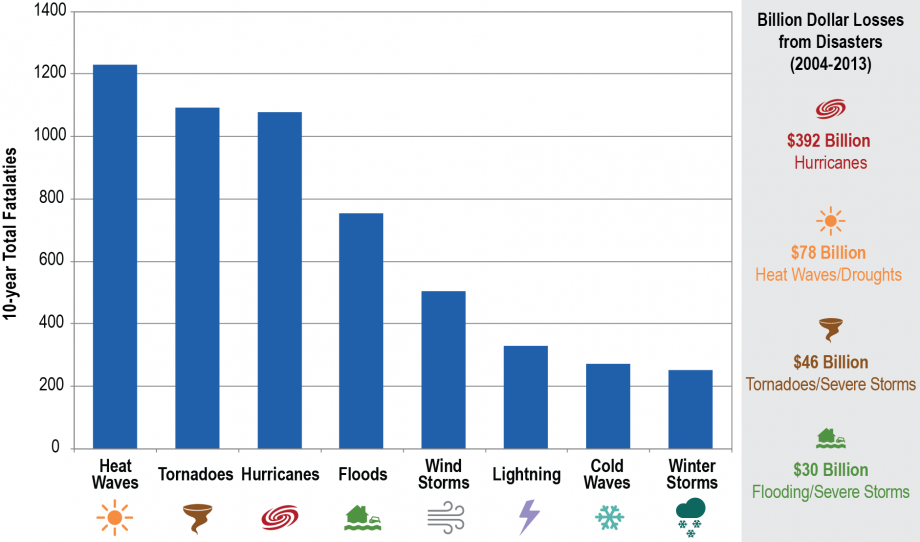
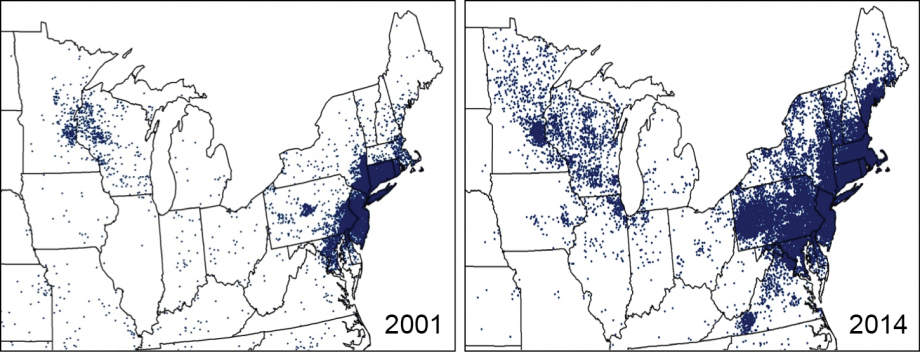
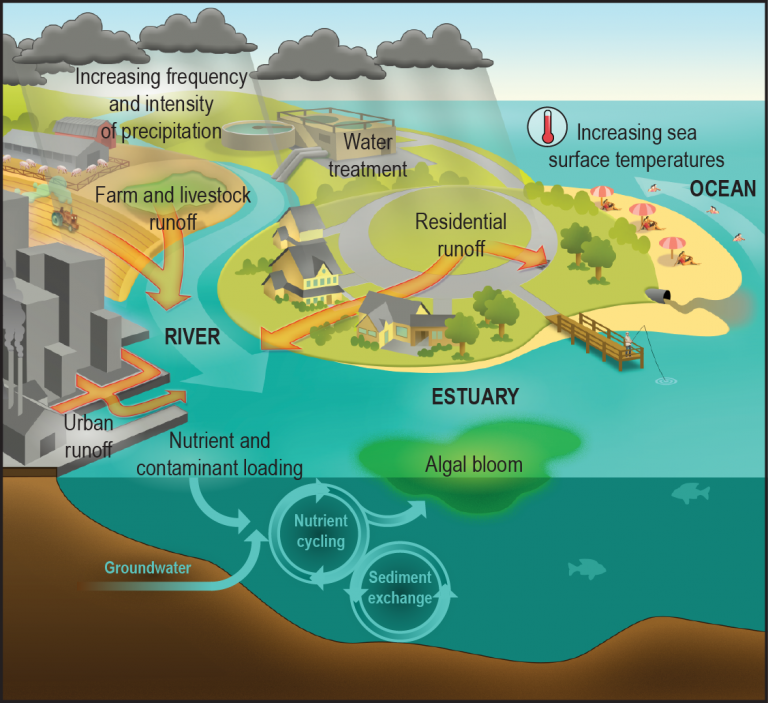
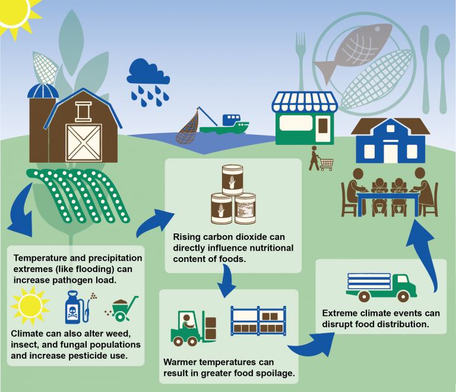
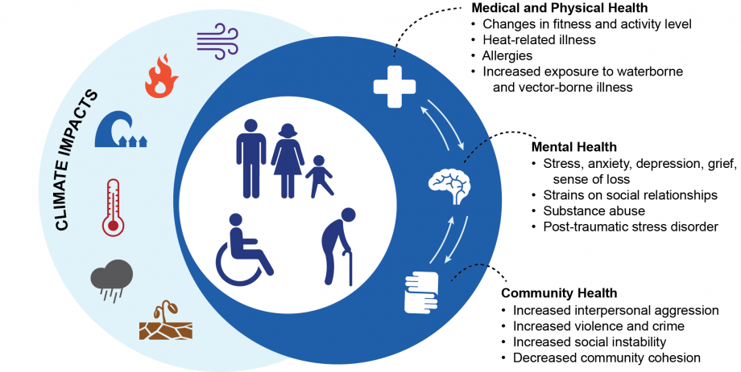
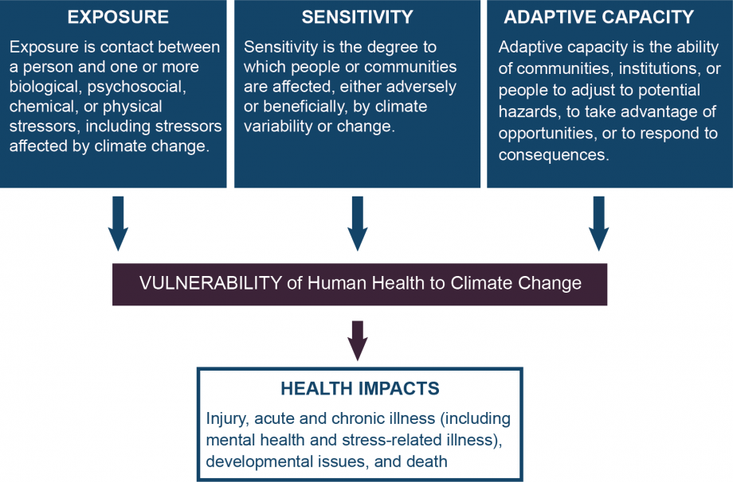

As we know, climate change has been a huge topic to talk about.
Some people believe that there is no such thing as climate change because they
think it's part of the environment. However, according to many studies by
university proffessos and scientits have proven that climate change is real
and will not stop, but we can help slow it down.
Climate Change and Health
The influences of weather and climate on human health are significant and varied.
Exposure to health hazards related to climate change affects different people and different
communities to different degrees. While often assessed individually, exposure to multiple
climate change threats can occur simultaneously, resulting in compounding or cascading
health impacts (see Figure ES2).
With climate change, the frequency, severity, duration, and location of weather and climate
phenomena—like rising temperatures, heavy rains and droughts, and some other kinds of
severe weather—are changing. This means that areas already experiencing health-threatening
weather and climate phenomena, such as severe heat or hurricanes, are likely to experience
worsening impacts, such as higher temperatures and increased storm intensity, rainfall
rates, and storm surge. It also means that some locations will experience new climate-related
health threats. For example, areas previously unaffected by toxic algal blooms or waterborne
diseases because of cooler water temperatures may face these hazards in the future as
increasing water temperatures allow the organisms that cause these health risks to thrive.
Even areas that currently experience these health threats may see a shift in the timing of
the seasons that pose the greatest risk to human health.
Climate change can therefore affect human health in two main ways: first, by changing the
severity or frequency of health problems that are already affected by climate or weather
factors; and second, by creating unprecedented or unanticipated health problems or health
threats in places where they have not previously occurred.
Temperature-Related Death and Illness

Increasing concentrations of greenhouse gases lead to an increase of both
average and extreme temperatures. This is expected to lead to an increase
in deaths and illness from heat and a potential decrease in deaths from
cold (see Figure ES3), particularly for a number of communities especially
vulnerable to these changes, such as children, the elderly, and economically
disadvantaged groups. Days that are hotter than the average seasonal temperature
in the summer or colder than the average seasonal temperature in the winter cause
increased levels of illness and death by compromising the body’s ability to regulate
its temperature or by inducing direct or indirect health complications. Loss of
internal temperature control can result in a cascade of illnesses, including heat
cramps, heat exhaustion, heatstroke, and hyperthermia in the presence of extreme
heat, and hypothermia and frostbite in the presence of extreme cold. Temperature
extremes can also worsen chronic conditions such as cardiovascular disease, r
espiratory disease, cerebrovascular disease, and diabetes-related conditions.
Prolonged exposure to high temperatures is associated with increased hospital
admissions for cardiovascular, kidney, and respiratory disorders.
Air Quality Impacts

Changes in the climate affect the air we breathe, both indoors and
outdoors. The changing climate has modified weather patterns, which in turn
have influenced the levels and location of outdoor air pollutants such as
ground-level ozone (O3) (see Figure ES4) and fine particulate matter.
Increasing carbon dioxide (CO2) levels also promote the growth of plants
that release airborne allergens (aeroallergens). Finally, these changes
to outdoor air quality and aeroallergens also affect indoor air quality
as both pollutants and aeroallergens infiltrate homes, schools, and
other buildings. Poor air quality, whether outdoors or indoors, can
negatively affect the human respiratory and cardiovascular systems.
Higher pollen concentrations and longer pollen seasons can increase
allergic sensitization and asthma episodes and thereby limit productivity
at work and school.
Extreme Events

Climate change projections show that there will be continuing
increases in the occurrence and severity of some extreme events by the
end of the century, while for other extremes the links to climate change
are more uncertain. Some regions of the United States have already
experienced costly impacts—in terms of both lives lost and economic
damages (see Figure ES5)—from observed changes in the frequency,
intensity, or duration of certain extreme events (see Table 1 in
Ch 4: Extreme Events). While it is intuitive that extremes can have health
impacts such as death or injury during an event (for example, drowning during
floods), health impacts can also occur before or after an extreme event,
as individuals may be involved in activities that put their health at
risk, such as disaster preparation and post-event cleanup. Health risks
may also arise long after the event, or in places outside the area where
the event took place, as a result of damage to property, destruction of
assets, loss of infrastructure and public services, social and economic
impacts, environmental degradation, and other factors. Extreme events also
pose unique health risks if multiple events occur simultaneously or in
succession in a given location. The severity and extent of health effects
associated with extreme events depend on the physical impacts of the extreme
events themselves as well as the unique human, societal, and environmental
circumstances at the time and place where events occur.
Vector-Borne Diseases

Vector-borne diseases are illnesses that are transmitted by vectors,
which include mosquitoes, ticks, and fleas. These vectors can carry infective
pathogens such as viruses, bacteria, and protozoa, which can be transferred from
one host (carrier) to another. The seasonality, distribution, and prevalence of
vector-borne diseases are influenced significantly by climate factors, primarily
high and low temperature extremes and precipitation patterns. Climate change is
likely to have both short- and long-term effects on vector-borne disease transmission
and infection patterns, affecting both seasonal risk and broad geographic changes in
disease occurrence over decades (see Figure ES6). While climate variability and
climate change both alter the transmission of vector-borne diseases, they will
likely interact with many other factors, including how pathogens adapt and change,
the availability of hosts, changing ecosystems and land use, demographics, human
behavior, and adaptive capacity. These complex interactions make it difficult to
predict the effects of climate change on vector-borne diseases.
Water-Related Illness

Across most of the United States, climate change is expected to affect fresh and marine water resources in ways that will increase people’s exposure to water-related contaminants that cause illness (see Figure ES7). Water-related illnesses include waterborne diseases caused by pathogens, such as bacteria, viruses, and protozoa. Water-related illnesses are also caused by toxins produced by certain harmful algae and cyanobacteria and by chemicals introduced into the environment by human activities. Exposure occurs through ingestion, inhalation, or direct contact with contaminated drinking or recreational water and through consumption of contaminated fish and shellfish. Factors related to climate change—including temperature, precipitation and related runoff, hurricanes, and storm surge—affect the growth, survival, spread, and virulence or toxicity of agents (causes) of water-related illness. Whether or not illness results from exposure to contaminated water, fish, or shellfish is dependent on a complex set of factors, including human behavior and social determinants of health that may affect a person’s exposure, sensitivity, and adaptive capacity. Water resource, public health, and environmental agencies in the United States provide many public health safeguards to reduce risk of exposure and illness even if water becomes contaminated. These include water quality monitoring, drinking water treatment standards and practices, beach closures, and issuing advisories for boiling drinking water and harvesting shellfish.
Food Safety, Nutrition, and Distribution

Safe and nutritious food supply is a vital component of food security. The impacts of climate change on food production, prices, and trade for the United States and globally have been widely examined, including in the recent report “Climate Change, Global Food Security, and the U.S. Food System.” An overall finding of that report was that “climate change is very likely to affect global, regional, and local food security by disrupting food availability, decreasing access to food, and making utilization more difficult.” This chapter focuses on some of the less reported aspects of food security, specifically the impacts of climate change on food safety, nutrition, and distribution. There are two overarching means by which increasing carbon dioxide (CO2) and climate change alter safety, nutrition, and distribution of food. The first is associated with rising global temperatures and the subsequent changes in weather patterns and extreme climate events. Current and anticipated changes in climate and the physical environment have consequences for contamination, spoilage, and the disruption of food distribution. The second pathway is through the direct CO2 “fertilization” effect on plant photosynthesis. Higher concentrations of CO2 stimulate growth and carbohydrate production in some plants, but can lower the levels of protein and essential minerals in a number of widely consumed crops, including wheat, rice, and potatoes, with potentially negative implications for human nutrition.
Mental Health and Well-Being

The effects of global climate change on mental health and well-being are integral parts of the overall climate-related human health impacts. Mental health consequences of climate change range from minimal stress and distress symptoms to clinical disorders, such as anxiety, depression, post-traumatic stress, and suicidality. Other consequences include effects on the everyday life, perceptions, and experiences of individuals and communities attempting to understand and respond appropriately to climate change and its implications. The mental health and well-being consequences of climate change related impacts rarely occur in isolation, but often interact with other social and environmental stressors. The interactive and cumulative nature of climate change effects on health, mental health, and well-being are critical factors in understanding the overall consequences of climate change on human health (see Figure ES9).
Populations of Concern

Climate change is already causing, and is expected to continue to cause, a range of health impacts that vary across different population groups in the United States. The vulnerability of any given group is a function of its sensitivity to climate change related health risks, its exposure to those risks, and its capacity for responding to or coping with climate variability and change (see Figure ES10). Vulnerable groups of people, described here as populations of concern, include those with low income, some communities of color, immigrant groups (including those with limited English proficiency), Indigenous peoples, children and pregnant women, older adults, vulnerable occupational groups, persons with disabilities, and persons with preexisting or chronic medical conditions. Characterizations of vulnerability should consider how populations of concern experience disproportionate, multiple, and complex risks to their health and well-being in response to climate change.